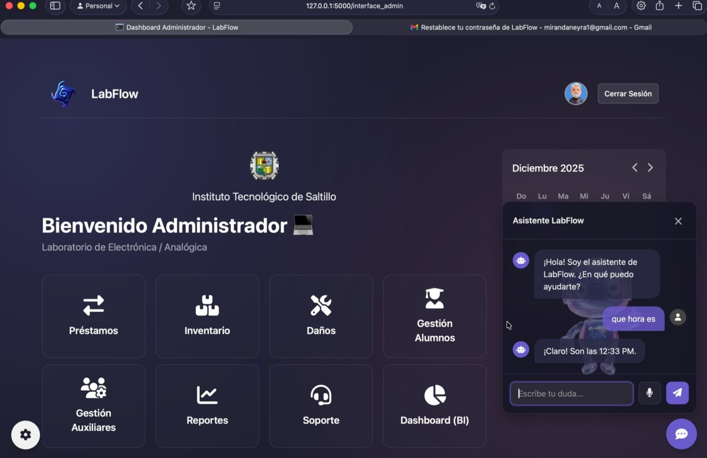

01
Business Processes
Procurement · Logistics · Manufacturing · Inventory
Computer Systems Engineering
SAP · Business Process Automation · Data Analytics
Where business complexity becomes intelligent systems.
Combining enterprise processes, automation and data to build practical digital solutions across procurement, logistics and manufacturing environments.
THE OPERATING PRINCIPLE
My path moved through customer-facing operations, materials, manufacturing and enterprise technology. Each stage added a different way of seeing a business: customers reveal needs, materials reveal flow, manufacturing reveals constraints, and systems reveal where complexity can be redesigned.
Today I bring those layers together through SAP, automation and data — translating operational friction into practical digital solutions.
Procurement · Logistics · Manufacturing · Inventory
SAP GUI · ERP Workflows · Power Platform · Automation
Python · Power BI · SQL · Generative AI
FROM OPERATIONS TO SYSTEMS
The value is not in having worked in different industries. It is in what each one taught me to see.
BUILD THE CHANGE
Professional case studies stay intentionally high-level. The purpose here is to show the problem, the reasoning and the shape of the solution — without exposing confidential company data or source code.
A recurring material-master process became a validation-first automation built around SAP GUI Scripting and Python. The important change was not only speed: incomplete inputs could be surfaced before they became execution problems.
Manual repetition, incomplete source data and avoidable rework.
Validate first, automate the repeatable SAP sequence, then wrap it in a friendlier interface.
A recurring workflow that became faster, repeatable and easier to execute consistently.
A document-heavy manual review was reframed as a classification and evidence problem. The workflow recursively inspects fragmented archives, identifies key documents, cross-checks information and produces a traceable audit output.
Evidence was distributed across folders, compressed files and different document types.
Classify, deduplicate, extract, cross-check and preserve evidence for human review.
Manual inspection became a structured exception-driven review with traceable results.
Email and message-based tracking became a role-aware workflow for purchasing documentation, required files, operational status and audit history — giving users one place to see what was happening.
Status, documents and follow-up lived across disconnected messages and email threads.
Centralize the record, enforce required documentation, apply roles and make status visible.
A shared operational view with stronger traceability and less searching for context.
A web application for access control and student registration in an Electronics / Analog laboratory, with administrator roles, validation rules and Oracle-backed records.

THE OPERATING STACK
SAP GUI · MM01/MM02 · Material Master · ERP workflows
Python · SAP GUI Scripting · Power Automate · Excel automation
Power BI · Power Query · DAX · SQL · Excel
Power Apps · Microsoft Lists · SharePoint · Process workflows
Procurement · Logistics · Manufacturing · Inventory · Customer operations
Problem framing · Prototyping · Documentation · Context engineering · Validation
Instituto Tecnológico de Saltillo · Expected Dec 2026
SAP S/4HANA & ERP learning path · In progress